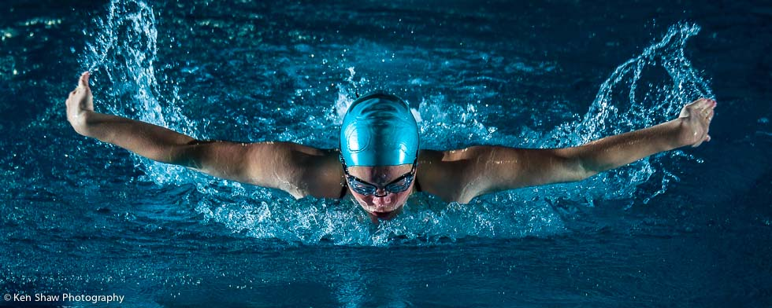
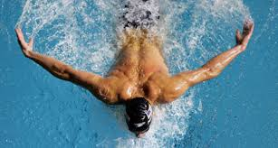
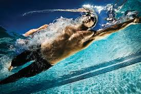

History
Main article: History of swimming
Australian Sydney Cavill (1881–1945), son of the "swimming professor" Frederick Cavill, was 220 yards amateur champion of Australia at the age of 16 and is credited as the originator of the butterfly stroke. He followed his famous brothers to America and coached notable swimmers at San Francisco's Olympic Club.[4]
In late 1933 Henry Myers swam a butterfly stroke in competition at the Brooklyn Central YMCA.[5] The butterfly style evolved from the breaststroke. David Armbruster, swimming coach at the University of Iowa, researched the breaststroke, especially considering the problem of drag due to the underwater recovery. In 1934 Armbruster refined a method to bring the arms forward over the water in a breaststroke. He called this style "butterfly". While the butterfly was difficult, it brought a great improvement in speed. One year later, in 1935, Jack Sieg, a swimmer also from the University of Iowa, developed a kick technique involving swimming on his side and beating his legs in unison, similar to a fish tail, and then modified the technique afterward to swim it face down. He called this style Dolphin fishtail kick. Armbruster and Sieg quickly found that combining these techniques created a very fast swimming style consisting of butterfly arms with two dolphin kicks per cycle. Richard Rhodes claims that Volney Wilson invented the 'Dolphin' after studying fish, and used it to win the 1938 US Olympic Trials, earning him a disqualification.[6]
Currently, the entire style is referred to as butterfly, but sometimes still also called dolphin, especially when referring to the dolphin kick.[7][8]
This new style was considerably faster than a regular breaststroke. Using this technique Jack Sieg swam 100 yards in 1:00.2. However, the dolphin fishtail kick violated the breaststroke rules set by FINA and was not allowed. Therefore, the butterfly arms with a breaststroke kick were used by a few swimmers in the 1936 Summer Olympics in Berlin for the breaststroke competitions. In 1938, almost every breaststroke swimmer was using this butterfly style, yet this stroke was considered a variant of the breaststroke until 1952, when it was accepted by FINA as a separate style with its own set of rules. The 1956 Summer Olympics were the first Olympic games where the butterfly was swam as a separate competition, 100 m (women) and 200 m (men).
Technique
The butterfly technique with the dolphin kick consists of synchronous arm movement with a synchronous leg kick.[9] Good technique is crucial to swim this style effectively. The wave-like body movement is also very significant, as this is the key to easy synchronous over-water recovery and breathing.
In the initial position, the swimmer lies on the breast, the arms are stretched to the front, and the legs are extended to the back.

Arm movement
The butterfly stroke has three major parts, the pull, the push, and the recovery. These can also be further subdivided. From the initial position, the arm movement starts very similarly to the breast stroke. At the beginning the hands sink a little bit down with the palms facing outwards and slightly down at shoulder width, then the hands move out to create a Y. This is called catching the water. The pull movement follows a semicircle with the elbow higher than the hand and the hand pointing towards the center of the body and downward. Do form the traditionally taught "keyhole".
The push pushes the palm backward through the water underneath the body at the beginning and at the side of the body at the end of the push. The swimmer only pushes the arms 1/3 of the way to the hips, making it easier to enter into the recover and making the recovery shorter and making the breathing window shorter. The movement increases speed throughout the pull/push phase until the hand is the fastest at the end of the push. This step is called the release and is crucial for the recovery. The speed at the end of the push is used to help with the recovery.
The recovery swings the arms sideways across the water surface to the front, with the elbows straight. The arms should be swung forward from the end of the underwater movement, the extension of the triceps in combination with the butterfly kick will allow the arm to be brought forwards relaxed yet quickly. In contrast to the front crawl recovery, this arm recovery is a ballistic shot. The only other way of lifting the arms and the shoulders out of the water is by dropping one's hip. Therefore the recovery, at least the acceleration of the arms, is in no way relaxed. It is important not to enter the water too early, because this would generate extra resistance as the arms moved forward in the water against the swimming direction, however, during longer distances, this cannot be avoided, and it is more important to avoid dropping one's hips. A high elbow recovery, as in front crawl, would be disadvantageous because of the natural undulations that are partially caused by the recovery and the relaxed movement caused by the momentum of a triceps extension. Limitations of the shoulder movement in the human body make such a motion unlikely. Hands should enter into the water again at 11 and one with thumbs entering first and pinky last.
The arms enter the water with the thumbs first at shoulder width. A wider entry loses movement in the next pull phase, and a smaller entry, where the hands touch, wastes energy. The cycle repeats with the pull phase. However, some people prefer to touch in front, because it helps them catch water, as long as they can do this efficiently, they are not losing anything.

Leg movement
The leg movement is similar to the leg movement in the front crawl, except the legs are synchronized with each other which uses a whole different set of muscles. The shoulders are brought above the surface by a strong up and medium down kick, and back below the surface by a strong down and up kick. A smooth undulation fuses the motion together.
The feet are pressed together to avoid loss of water-pressure. The feet are naturally pointing downwards, giving downwards thrust, moving up the feet and pressing down the head.
There is no actual stipulation in competitive butterfly rules that a swimmer make a fixed number of pulses in butterfly–the swimmer may kick as little or as much as he or she may wish.[10] While competitive rules allow such a choice, the typical method of swimming butterfly is with two kicks.
As butterfly originated as a variant on breaststroke, it would be performed with a breaststroke or whip kick by some swimmers. While breaststroke was separated from butterfly in 1953, the breaststroke kick in butterfly was not officially outlawed until 2001.[11] However a number of Masters swimmers were upset with the change since they came from a time when butterfly was usually swum with a breaststroke kick.[12] FINA was then convinced to allow a breaststroke kick in Masters swimming.[13] Given the option, most swimmers choose to use a dolphin kicking action, but there still is a small minority of swimmers who prefer the breaststroke kick, for recreational swimming and even for competition.